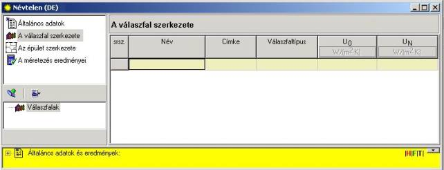
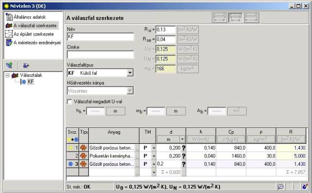
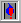

2.4. Az építészeti térelhatárolók leírása
A programnak ez a része a térelhatárolók definiálására, azok szerkesztésére, valamint az „U” (vagy „R”) együtthatójuk meghatározására szolgál. A definiált térelhatárolók az épület struktúrájában való használatuk deklarálásával a helyiségek konstrukciós elemeként szerepelnek.
Az épület „Általános adataiban” minden mezõ kitöltése után át kell lépni a terv soron következõ adataira, az egérrel a „Térelhatárolódefiniciók” pozícióra kattintva. Ekkor a bal alsó ablakban megjelenik a deklarált térelhatárolók listája – új terv esetén üres lesz. A jobb oldalon megjelenik a térelhatároló táblázata – szintén üres.

Új
térelhatároló beírásához a „Térelhatárolódefiníció hozzáadása”  ikonra kell
kattintani, vagy a „Menü kibontása” nyomógombot
használva, ki kell választani a „Térelhatároló hozzáadást”. Ez az utasítás a
jobboldali egérgombbal elõhívható, felbukkanó menüben is hozzáférhetõ.
ikonra kell
kattintani, vagy a „Menü kibontása” nyomógombot
használva, ki kell választani a „Térelhatároló hozzáadást”. Ez az utasítás a
jobboldali egérgombbal elõhívható, felbukkanó menüben is hozzáférhetõ.
Térelhatároló beállításához az F7 és INS billentyûket is lehet használni (az F7 új térelhatárolót helyez a lista végére, az INS a kurzor helyére).
Minden térelhatárolóhoz megjelenik egy táblázat kiegészítendõ adatokkal, a térelhatároló szerkezetének szerkesztõ ablaka pedig a következõképpen néz ki:

A szerkesztõ ablak két fõ részbõl áll: a térelhatároló általános adataiból, valamint a térelhatároló rétegeinek táblázatából.
A térelhatároló általános adatai a következõk: név (a térelhatárolót a helyiségbe történõ beállításakor azonosító rövid név), magyarázat a névhez a „Címke” mezõben, a térelhatárolónak a listából kiválasztott típusa, valamint a térelhatároló típusától és a méretezési opcióktól függõ többi adat. A program, a térelhatároló típusától függõen, automatikusan megadja a hõvezetés irányát és a térelhatároló külsõ és belsõ oldalán az Rsi és Rse hõfelvételi ellenállásokat. Az olyan belsõ térelhatárolóknál, mint pl. az épületszintek közötti födém, önállóan kell kiválasztani a hõáramlás irányát „felfelé” vagy „lefelé”.
! A sárga színnel kitöltött mezõk azt jelentik, hogy ezeket a felhasználó nem szerkesztheti, az értéküket a program határozza meg, más adatok alapján.
A különbözõ típusú térelhatárolóknál a szezonális energiaigény számításához szükséges mezõket a 4.4. fejezet tárgyalja.
Az általános adatok kitöltése után meg kell határozni a térelhatároló hõtechnikai jellemzõit. Ezt kétféleképpen lehet elvégezni: a térelhatárolót rétegek nélkül definiálva a „Megadott U-jú térelhatároló" ablakban kattintva, vagy a rétegekkel rendelkezõ térelhatárolót a térelhatárolórétegek táblázatában definiálva.
A külsõ falak rétegeinek táblázatában a rétegeket a térelhatároló belsõ oldala felöl a külsõ felé haladva kell meghatározni – a hõ áramlásának irányával megegyezõen, amelyre az Lp oszlopban levõ ikonok emlékeztetnek. Az elsõ (belsõ) réteget az ikon jelenti, a térelhatároló utolsó rétegét pedig az ikon. A rétegek helyesen megadott sorrendjének alapvetõ jelentõsége van a külsõ környezettel érintkezõ térelhatárolók megadásánál.
A program tartalmaz építõanyag katalógusokat, tehát nem kell a soron következõ térelhatárolórétegek hõtechnikai jellemzõit kézzel beírni. A felhasználó önállóan betehet katalóguson kívüli térelhatárolóréteget is, a nevének és jellemzõinek megadásával az egymást követõ oszlopokban.
Az építõanyagok listájának meghívásához "Az anyag kiválasztása listából” mezõben található nyomógombra kell kattintani. Ebben a listában rendelkezésre áll egy gyors keresési üzemmód az anyaghoz – elég beírni az elsõ betûket a „A keresett anyag elsõ betûinek beírása” mezõbe, amelyet a kurzor jelöl. A választást az Enter billentyûvel, vagy az OK gombra kattintva lehet megerõsíteni.
Ekkor már csak a réteg vastagságát kell beírni – „d” oszlop. Itt ki lehet választani a réteg vastagságának egységét (m, cm, mm) a nyomógomb alatt legördülõ listából. A program automatikusan átszámolja a térelhatároló vastagságát a kiválasztott egységre. Az alapértelmezett mértékegység a méter.
Ebben az oszlopban a felhasználó kiválaszthatja „A térelhatároló hõszigetelése” mezõ opcióját, amelynek segítségével a térelhatárolót hõszigetelni lehet a kívánt „Uo” együttható elérése érdekében. A térelhatároló hõtechnikai paramétereinek módosítását el lehet érni az általunk kiválasztott réteg vastagságának megnövelésével, a nyomógombot használva. Az ekkor megjelenõ ablak tartalmazza az „Uo – hõátbocsájtási tényezõ” mezõt, amely lehetõvé teszi a hõátbocsájtási tényezõ megkívánt értékének beírását.
A beírt „Uo” érték megerõsítése után a program kiszámítja a térelhatároló keresett vastagságát, amely teljesíti a térelhatároló hõtechnikai paramétereinek a kívánt Uo értékre történõ módosításának feltételét. Leggyakrabban hõszigetelõ réteget választunk.
A definiált térelhatároló a térelhatárolók listájába a felhasználó által megadott néven kerül be. Ha a megrendelõ meg akarja változtatni egy olyan definiált térelhatároló nevét, amely már használatban van az épületstruktúra definíciójában (valamelyik helyiségben van), megjelenik egy figyelmeztetés, amely után a program lehetõséget ad a térelhatároló módosításának megerõsítésére vagy elvetésére. A megerõsítés a térelhatároló definíciójának a megadott, új néven történõ elmentését jelenti.
Ha a térelhatárolót rétegek használata nélkül akarjuk definiálni, ki kell jelölni a „Megadott U-jú térelhatároló" mezõt, és be kell írni az „U” (vagy „R”) együttható értékét. Ilyen módon kell az épületben levõ ablakokat és az ajtókat is definiálni. Ahhoz, hogy a programmal effektíven lehessen dolgozni, itt meg lehet adni az ablakok és ajtók méreteit, mivel munka közben ezt a program, a térelhatároló nevének megadása után, automatikusan meghívja. Az ablakok és ajtók magasságát és szélességét a tok belsõ méreteinek megfelelõen kell megadni (a szabványoknak megfelelõen).
A megadott „U” együtthatójú térelhatárolókra történõ szezonális energiaigény számítás esetén szintén meg kell határozni a térelhatároló Sd vastagságát, valamint a térelhatárolónak az 1m2 felületre viszonyított C/A hõtérfogatot. Az ablakra és ajtóra nem adunk meg hõtérfogatot. Az ablak meg kell adni az üveg felületének arányát az ablak felületében, valamint az üvegezés napfényáteresztõ képességét. Az átlátszó térelhatárolók többi adatát, ami a szezonális energiaigény számításához szükséges az „Épületstruktúra” szintjén levõ ablak/ajtó szerkesztõ ablakában kell beírni – lásd a 4.5.4 fejezetet!
Az adatok megadásának pontos leírását a szezonális energiaigény számításához a 4.3, 4.4 valamint a 4.5 fejezet tartalmazza.
! A térelhatárolókat és a helyiségeket a nevük egyértelmûen azonosítja, tehát a neveknek a terven belül egyedieknek kell lenniük.
A külsõ térelhatárolókra, amelyekre meghatároztuk a rétegfelépítést, aktív a térelhatároló szerkesztõablakának jobb alsó sarkában található, ikonnal jelzett mezõ. Ez a hõmérsékletesés grafikonjának megjelenítésére szolgál. Abban az esetben, ha a felhasználó az „Általános adatokban” kiválasztja a számításnak „A páralecsapódás számítása a térelhatároló belsejében” opcióját, ugyanezen a grafikonon megjelenik a vízpára parciális nyomásának és telítési nyomásának görbéje a térelhatároló belsejében. Ez az opció nem vonatkozik a talajjal érintkezõ válaszfalakra.
Ha
megjelenik az 
Ha megjelenik az ikon, az azt jeleni, hogy a térelhatárolónál fellépõ kicsapódás annak belsõ oldalán lép fel.
Az ikonra történõ kattintás egy ablakot nyit meg a térelhatároló belsõ és külsõ oldalán levõ levegõ hõmérsékletének és páratartalmának, mint a párakicsapódást szabályozó adatoknak a szerkesztéséhez (anélkül, hogy ez valamilyen kapcsolatban lenne az adott térelhatárolónak a tervben történõ tényleges használatával).
! Úgy a térelhatárolók listáját, mint a rétegek táblázatában kattintani lehet a jobboldali egérgombbal, ekkor megjelenik egy felbukkanó menü. Ez a menü számos olyan funkciót tartalmaz, amelyek segítségünkre vannak a térelhatároló szerkesztésénél.
A felhasználó az adatok beírásának ezt a szakaszát ki is hagyhatja, és a térelhatárolók nevét és hovatartozását megadhatja közvetlenül a helyiségek táblázatában is (lásd a 2.6.4 fejezetet). Azonban az így meghatározott térelhatárolókra a program nem végzi el a szezonális energiaigény számítását, mivel a tervben nincsenek meg a térelhatárolók hõtechnikai tulajdonságaira vonatkozó adatok.